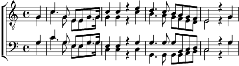

1. Vaudois ! un nouveau jour se lève,
Il porte la joie en nos cœurs
La liberté n'est plus un rêve,
Les droits de l'homme sont vainqueurs.
De notre antique dépendance
Chassons l'importun souvenir,
Et du plus riant avenir
Osons concevoir l'espérance !
Refrain:
Que dans ces lieux règne à jamais
L'amour des lois, la liberté, la paix !
2. Que dans nos riantes campagnes
Cet heureux refrain soit chanté,
Que par l'écho de nos montagnes
Il soit mille fois répété.
Dans les bras d'une mère tendre,
Qu'il soit bégayé par l'enfant
Que la voix d'un sexe charmant
A nos guerriers le fasse entendre.
Refrain
3. Que la fermeté, la prudence,
Guident toujours le magistrat
Dans ses mains avec confiance
Laissons les rênes de l'État,
Libres, égaux, mais sans licence,
N'ayons pas les tristes regrets
D'avoir creusé par nos excès
Le tombeau de l'indépendance !
Refrain
4. Voyez cette eau brillante et pure,
Ces coteaux, ce site enchanteur.
Enfants chéris de la nature,
Jouissons de notre bonheur !
De l'acte qui nous régénère
Révérons les feuillets sacrés
Qu'aux noms par la haine inspirés
Succède le doux nom de frère !
Refrain
5. Dieu puissant ! sur nos destinées
Répands de nouveau les bienfaits
Que nos passions enchaînées
Se taisent devant tes décrets.
Que, soumis à ta Providence,
Le Vaudois, plein de ton amour,
Puisse t'adresser chaque jour
L'hymne de sa reconnaissance :
Refrain